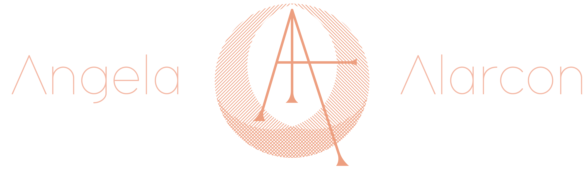

Among Strangers came to life in 2014 in San Francisco, California.
Using naturally formed and some altered crystals, creator Angela Alarcon, values the spiritual nature of each stone, believing that each crystal carry distinct properties and healing qualities depending on the kind.
Among Strangers stands by the belief that each piece has already pre-chosen a bearer, and is hand crafted with intention into powerful talismans to serve the bearer’s highest and best.
The brand’s aesthetic resembles old relics dug up from the ground, with its organic formed nature made from the method of electroforming and plating metals.
After a year of selling online on Etsy, as well as Instagram, and in person, I’ve been able to study the target market of my buyers, not just who have spending power, but take a real interest in my jewelry and come back as return customers.
Age: 30-40yo
Consumer Attitude: Will search online for the best and most unique piece after being inspired by a photo posted on instagram
Consumer Values:Values secrecy, and finding something rare and unique to all their peers, values pieces that are not just for aesthetic purposes but are meaningful purchases, values stories behind the pieces
Lifestyle/Interests: Travels, takes weekend vacation, attends dinner parties with friends on occasion, loves hiking and adventure, seeks for more meaning in life, values their overall health and well-being, exercises and practices minfulness
Tech: engaged in social media, values affirmation from others
I have a deep affinity to folklore and fairytales and Kay Nielsen’s illustrations accompanying these stories we’ve heard as children are breathtaking and beautiful. I find that his style is such a lost art as the world is moving to a more realistic aesthetic.
{kind=link}
{kind=link}
{kind=link}
{kind=link}
{kind=link}
{kind=link}
{kind=link}